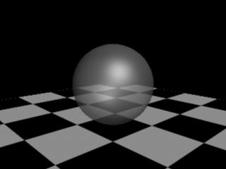
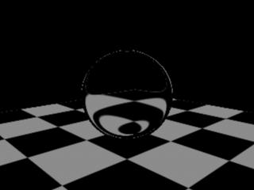
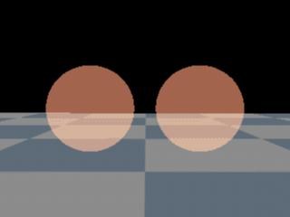
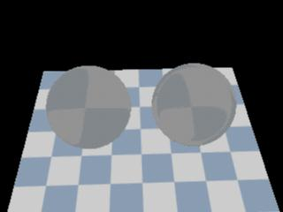

|
Sample Compositing
This section shows the workflow to use sample compositing
shaders.
References:
mental ray User Manual, Chapter 3.8.
mental ray Shaders Guide, Chapter 1.5.
Rendering with mental ray, Appendix C.
Where to find sample composting shaders
Material shaders appear in the Hypershade > Create mental ray Nodes >
Sample Compositing.
The following sample compositing shaders are shipped with Maya:
- mib_dielectric
- mib_opacity
- mib_reflect
- mib_refract
- mib_refraction_index
- mib_transparency
- mib_twosided
Step 1. Getting Ready
Make sure the mental ray for Maya plug-in is
loaded.
Windows > Settings/Preferences >
Plug-in Manager...
Find Mayatomr and check loaded
Open the template scene
that we will use for this section: sampleCompositing_start.ma.
Step
2. Assign a material shader to the sphere
This example uses mib_illum_phong for the material, but you
can use any of mental ray material shaders. See Materials if you are not familiar with
material shaders.
Step 3. Adjust Phong shader parameters
Open the Attribute Editor of mib_illum_phong1.
Adjust
shader parameters.
Render with mental ray.
A highlight from the point light on the Phong
material appears.
|

|
|
mib_illum_phong
|
Step
4. Create a sample compositing shader
We will use mib_refract to add refraction to the previous
image.
Create
a mib_refract shader
- Hypershade > Create mental ray Nodes >
Sample Compositing
- Click mib_refract
Step 5. Setup mib_refract
- refract
is the color of refraction. Setting this to 0 won't show any
refraction. Setting this to 1 will show refraction only, and no input
in the final image. We will set
this value to 0.5 for now.
- ior
is index of refraction. Setting this to 0 or 1 won't bend the
refraction ray and makes the sphere transparent instead of refractive.
You can achieve the same effect by using mib_transparent. Set this to 1.3 .
- mib_refract
composites refraction image to input. In order to achieve Phong
material with refraction, the outValue
of mib_illum_phong1 should be connected to input, and mib_refract1
should connected to the shading engine.
- Select
mib_illum_phong1 and check its outgoing connection. mib_illum_phong1.message is connected to
mib_illum_phong1SG.miMaterialShader. The final connection between this
3 nodes should be:
- mib_illum_phong1.outValue ->
mib_refract1.input
- mib_refract1.message ->
mib_illum_phong1SG.miMaterialShader To make this connection,
- MMB drag and drop mib_illum_phong1 to
mib_refract1. Choose
input. This will
connect mib_illum_phong1.outValue to mib_refract1.input.
- MMB drag and drop mib_refract1 to
mib_illum_phong1SG. Choose
default. The Connection Editor shows up.
- Select
message of mib_refract1 from the left panel, and select miMaterialShader
of mib_illum_phong1SG from the right panel. If you cannot find message
attribute, make sure that Connection Editor > Left Display >
Show Hidden is turned on. Close the Connection Editor.
- Check input-output connection of mib_refract1
Now we are ready to render.
|
|
|
mib_illum_phong and mib_refract.
|
Step
6. Adjust ray tracing settings
After all this effort, we still cannot see the refraction. This is because
the raytracing setting is too low.
Render
again with mental ray. This time, refraction should appear.
The scene was saved out as sampleCompositing_refract.ma at
this point.
|

|
|
Refraction
with mib_illum_phong and mib_refract.
sampleCompositing_refract.ma
|
Step
7. Adjusting mib_refract parameters
Let's try changing parameter values of the shader.
|

|
|
mib_refract.ior
= 0 or 1
|
|

|
|
Mib_refract.refract
= 0
|
|

|
|
mib_refract.refract
= 1
|
- Set
refract to red. and render
.
Refraction of the checker shows up red and black, and the rest of the
sphere is rendered cyan.
This is result of refract color being multiplied to the
refraction, and (1 - refract) to input.
|

|
|
mib_refract.refract
= 1 0 0
|
Other examples
sampleCompositing_ex1.ma
: mib_opacity, mib_transparency
This scene shows how mib_opacity and mib_transparency can
achieve the same result. Note that input values of two shaders are
same. transp and opacity are set so
that the addition of two values is exactly 1.
input is not connected to any material
shader to keep the example simple.
|

|
|
mib_opacity,
mib_transparency
|
sampleCompositing_ex2.ma : mib_refraction_index
This scene shows the use of mib_refraction_index.
The left sphere uses mib_refract shaders as shown in above step by step example.
The right sphere uses mib_refraction_index connected to ior
attribute of mib_refract. mib_refraction_index
returns mtl_ior when entering an object, and 1/mtl_ior when
exiting an object. In this example, refraction ray entering the sphere uses
1.3 for the index of refraction, and 1/1.3 for refraction ray that exits
the sphere.
input is not connected to any material
shader to keep the example simple.
|

|
|
mib_refract,
mib_refraction_index
|
sampleCompositing_ex3.ma
: mib_reflect
This is an example of mib_reflect. Both spheres have
mib_reflect assgined to material shader of its own shading engine.
input is not connected to any material
shader to keep the example simple. The difference between the two is that
the mib_reflect2 assigned to the right sphere has notrace on.
If this parameter is on, the shader will sample the environment. In this
example, there is no environment shader assigned, causing the right sphere
to be rendered black.
|

|
|
mib_reflect
|
sampleCompositing_ex4.ma
: mib_reflect
sampleCompositing_ex4.ma took the previous scene, and assigned an environment shader
to persp camera. You can see that the left sphere shows reflection of the
floor, as well as reflection from the environment, whereas the right sphere
only shows reflection from the environment.
Please refer to Environment Shaders
for more information.
|

|
|
mib_reflect
|
sampleCompositing_ex5.ma
: mib_twoside
This scene shows a poly cube with mib_twoside. As the name of
the shader suggests, this shader applies front to the front faces,
and back to the back faces. Two different colors of
mib_illum_lambert are assigned to front and back in this
example.
|

|
|
mib_twoside
|
|